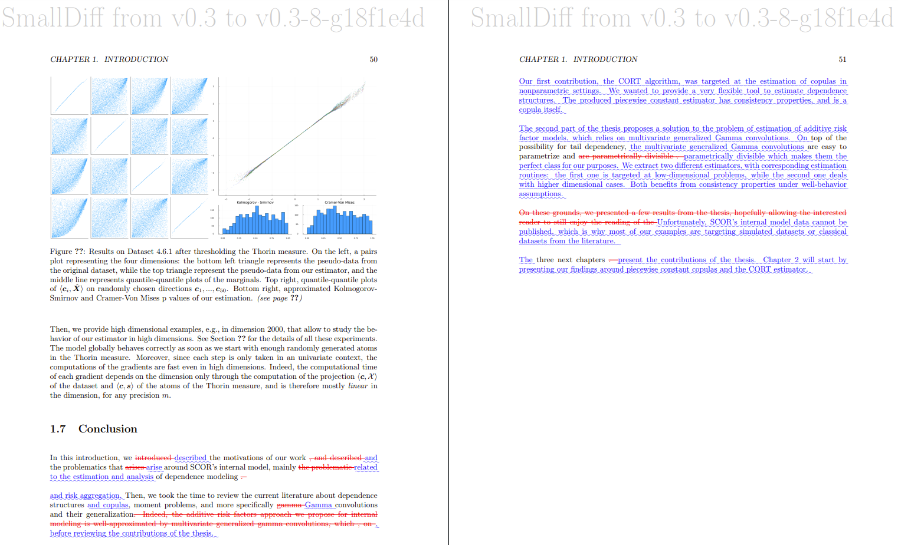

<!-- LTeX: language=fr --> class: center, middle # Introduction à à la gestion de version avec Git ### Pour débutant·es #### Par Oskar Laverny Septembre 2025 [Repo de la séance](https://GitHub.com/QuanTIMLab/introgit2025) --- # Gestion de version ? <script> remark.macros.scale = function (percentage) { var url = this; return '<img src="' + url + '" style="width: ' + percentage + '" />'; }; </script> <style> .row { display: flex; } .column { flex: 50%; } </style> <div class="row"> <div class="column"> <img src="img/phdcomics.gif" alt="Piled Higher and Deeper by Jorge Cham. Source: www.phdcomics.com" style="width: 75%" /> </div> <div class="column"> Les méthodes « primitives » (copie de dossiers, mails) sont manuelles et donc sources d’erreurs : <br /><br /> 1. On a besoin d’un historique de ce qui a été fait.<br /><br /> 2. Pouvoir revenir à une version précédente (et comparer) est précieux.<br /><br /> 3. La collaboration doit être fluide.<br /><br /> ⇒ Il vous <em>faut</em> un système de gestion de versions (VCS). <br /><br /><br /> </div> </div> --- # Pourquoi un système de contrôle de version ? Un VCS (Version Control System) **suit les changements sur un ensemble de fichiers/dossiers** et facilite la collaboration. Il enregistre une suite d’**instantanés (commits)** avec des **métadonnées**. Intérêts : - Collaboration structurée - Efficace pour petits comme grands projets - Répond vite aux questions « qui / quand / pourquoi ? » - **Permet de revenir à n’importe quel état antérieur** - **Gérer plusieurs versions en parallèle (branches)** **Remarque** : imprimer + annoter + rescanner = VCS primitif ; l’envoi par mail fonctionne mais devient vite chaotique (fusion manuelle pénible). --- ## Contrôle de version & recherche reproductible Dans le monde académique, on manipule beaucoup de fichiers texte : - Articles en `.tex`, références en `.bib` pour ceux qui écrivent en latex. - Données en `.csv` ou autre - Code source (analyses, figures, tableaux) - Pipeline de compilation (ex: `Makefile`) La **reproductibilité** exige de pouvoir reconstruire les résultats. <b>Un VCS facilite cela</b> ## Motivations classiques - **Transparence** du travail, **Traçabilité** fine des changements - **Collaboration** fluide (évite la jungle des mails) - **Automatisation** (génération, tests, rapports…) Projet académique = Ensemble de modif sur des fichiers textes. ⇒ **Comme un projet logiciel !** --- # Git : le standard de fait <div class="row"> <div class="column"> <img src="img/git.png" alt="XKCD Comic" style="width: 70%" /> </div> <div class="column"> 1. Créé en 2005 par Linus Torvalds pour le noyau Linux.<br /><br /> 2. <a href=https://insights.stackoverflow.com/survey/2021#overview>SODS2021</a> : ~94% des devs l’utilisent quotidiennement.<br /><br /> 3. GitHub héberge >200M dépôts.<br /><br /><br /> <b>Programme :</b><br /><br /> I. Introduction <i>bottom-up</i> à Git<br /><br /> II. Exemples d’application à la recherche<br /><br /> III. Travaux pratiques </div> </div> --- class: center, middle # I. Introduction <i>bottom-up</i> à Git --- # Modèle de données de Git Un **dépôt** est un ensemble de fichiers/dossiers dans un répertoire racine. ```terminal (root) (tree) | | - analysis (tree) | | | | - data.csv (blob) | | - script.jl (blob) | | - bibliograpy.bib (blob) | - paper.tex (blob) | - makefile (blob) | ``` Vocabulaire: Les dossiers sont des **trees**, les fichiers des **blobs** (structure récursive). On parle de **snapshot** pour une capture à un instant `t` du statut du répertoire. Un **commit** est un snapshot avec de la métadata: auteur, comentaire, date, lien vers le(s) commit(s) précédent, etc. --- # Modèle d’historique Git modélise l’historique comme un **DAG (graphe acyclique orienté)**. Chaque commit pointe vers son (ou ses) parent(s). Historique linéaire : ```terminal o---o---o ``` Travaux parallèles via branches : ```terminal o---o---o---o (you add a missing proof) \ o---o---o (your coauthor fixes a notation) ``` Les branches peuvent être fusionnées : ```terminal o---o---o---o-----------o (both the proof and the notation fix are included) \ / o---o---o ``` --- # Pseudo‑implémentation (schématique) On peut modéliser (grossièrement) la logique interne. Un fichier = suite d’octets : ```julia Blob = Vector{Byte} ``` Un dossier contient des entrées nommées : ```julia Tree = Dict{String,Union{Tree,Blob}} ``` Un commit : parents + métadonnées + arbre racine : ```julia struct Commit parent::Vector{Commit} # might be empty author::String message::String snapshot::Tree end ``` --- # Objets & adressage par contenu Un **objet** = blob, tree ou commit. ```julia Object = Union{Blob,Tree,Commit} ``` Adressage par le contenu (hash) : stockage d’objets indexés par identifiant : ```julia # le "store" principal: objects = Dict{String, Object}() # on l'initialise vide. ``` Les clefs = hash SHA‑1 de chaque objet : ```julia function store!(objects, o) id = sha1(o) objects[id] = o end function load(objects, id) return objects[id] end ``` *Note : références => pas de duplications inutiles.* --- ## Exemple de hash SHA‑1 Un hash SHA‑1 : chaîne hexadécimale de 40 caractères. - Déterministe mais sensible à tout changement (cahotique) - Sert d’identifiant de contenu - **Problème : peu lisible** Git gère aussi une liste de référence lisibles: ```julia references = Dict{String,String}() # mappe des noms lisibles à des hash sha-1. ``` Ex : `corrige_preuve`, `main`, `HEAD`, `v0.1`, `soumission` … On référence ainsi les objets par leur nom. **Remarque** : le graphe est immutable, mais les références sont bien mutables. --- # Quelques commandes Les commandes modifient soit l’historique (nouveaux commits), soit les références : ```terminal git commit git checkout git branch git merge ``` ```terminal --------------------------------------------------- o---o---o (HEAD -> master) --------------------------------------------------- git commit o---o---o---o (HEAD -> master) --------------------------------------------------- git branch; git checkout; git commit x2 o---o---o---o (master) \ o---o---o (HEAD -> bugfix) --------------------------------------------------- git checkout; git merge o---o---o---o-----------o (HEAD -> master) \ / o---o---o (bugfix) --------------------------------------------------- ``` --- class: center, middle class: center, middle # II. Exemples d’application à la recherche --- # Problème de « templating » (1/3) On a terminé une version d’un article : ```terminal lrnv@laptop paper $ git log --oneline --graph * <span style="color:yellow;">b9f1617</span><span style="color:yellow;"> (</span><span style="font-weight:bold;color:aqua;">HEAD -> </span><span style="font-weight:bold;color:lime;">master</span><span style="color:yellow;">, </span><span style="font-weight:bold;color:yellow;">tag: v1.0</span><span style="color:yellow;">)</span> Fix a typo <span style="font-weight:bold;color:#3333FF;">Oskar Laverny </span><span style="color:lime;">3 minutes ago (2023-01-12)</span> * <span style="color:yellow;">3cb7e6c</span> Add proof of main Thm <span style="font-weight:bold;color:#3333FF;">Oskar Laverny </span><span style="color:lime;">4 minutes ago (2023-01-12)</span> * <span style="color:yellow;">88d916e</span> Add definition of XX <span style="font-weight:bold;color:#3333FF;">Oskar Laverny </span><span style="color:lime;">4 minutes ago (2023-01-12)</span> * <span style="color:yellow;">147a080</span> First commit <span style="font-weight:bold;color:#3333FF;">Oskar Laverny </span><span style="color:lime;">5 minutes ago (2023-01-12)</span> ``` La version courante taggée `v1.0` est envoyée à l’archive / revue. On doit générer une variante conforme aux exigences de la revue (gabarit, notations). **On crée une branche :** ```terminal lrnv@laptop paper $ git checkout -b templating Switched to a new branch 'templating' ``` On adapte sur la branche dédiée et on commit les modifications. --- # Problème de « templating » (2/3) ```terminal lrnv@laptop paper $ git log --oneline --graph * <span style="color:yellow;">d380354</span><span style="color:yellow;"> (</span><span style="font-weight:bold;color:aqua;">HEAD -> </span><span style="font-weight:bold;color:lime;">templating</span><span style="color:yellow;">)</span> Comply with journal's XX template <span style="font-weight:bold;color:#3333FF;">Oskar Laverny </span><span style="color:lime;">18 seconds ago (2023-01-12)</span> * <span style="color:yellow;">b9f1617</span><span style="color:yellow;"> (</span><span style="font-weight:bold;color:yellow;">tag: v1.0</span><span style="color:yellow;">, </span><span style="font-weight:bold;color:lime;">master</span><span style="color:yellow;">)</span> Fix a typo <span style="font-weight:bold;color:#3333FF;">Oskar Laverny </span><span style="color:lime;">8 minutes ago (2023-01-12)</span> * <span style="color:yellow;">3cb7e6c</span> Add proof of main Thm <span style="font-weight:bold;color:#3333FF;">Oskar Laverny </span><span style="color:lime;">8 minutes ago (2023-01-12)</span> * <span style="color:yellow;">88d916e</span> Add definition of XX <span style="font-weight:bold;color:#3333FF;">Oskar Laverny </span><span style="color:lime;">9 minutes ago (2023-01-12)</span> * <span style="color:yellow;">147a080</span> First commit <span style="font-weight:bold;color:#3333FF;">Oskar Laverny </span><span style="color:lime;">10 minutes ago (2023-01-12)</span> ``` On envoie la branche `templating`. Pendant la révision on découvre une erreur → on corrige sur `master`. ```terminal lrnv@laptop paper $ git log --oneline --graph * <span style="color:yellow;">fde936d</span><span style="color:yellow;"> (</span><span style="font-weight:bold;color:aqua;">HEAD -> </span><span style="font-weight:bold;color:lime;">master</span><span style="color:yellow;">)</span> Fix error about XXX <span style="font-weight:bold;color:#3333FF;">Oskar Laverny </span><span style="color:lime;">23 seconds ago (2023-01-12)</span> <span style="color:red;">|</span> * <span style="color:yellow;">d380354</span><span style="color:yellow;"> (</span><span style="font-weight:bold;color:lime;">templating</span><span style="color:yellow;">)</span> Comply with journal's XX template <span style="font-weight:bold;color:#3333FF;">Oskar Laverny </span><span style="color:lime;">4 minutes ago (2023-01-12)</span> <span style="color:red;">|</span><span style="color:red;">/</span> * <span style="color:yellow;">b9f1617</span><span style="color:yellow;"> (</span><span style="font-weight:bold;color:yellow;">tag: v1.0</span><span style="color:yellow;">)</span> Fix a typo <span style="font-weight:bold;color:#3333FF;">Oskar Laverny </span><span style="color:lime;">11 minutes ago (2023-01-12)</span> * <span style="color:yellow;">3cb7e6c</span> Add proof of main Thm <span style="font-weight:bold;color:#3333FF;">Oskar Laverny </span><span style="color:lime;">12 minutes ago (2023-01-12)</span> * <span style="color:yellow;">88d916e</span> Add definition of XX <span style="font-weight:bold;color:#3333FF;">Oskar Laverny </span><span style="color:lime;">12 minutes ago (2023-01-12)</span> * <span style="color:yellow;">147a080</span> First commit <span style="font-weight:bold;color:#3333FF;">Oskar Laverny </span><span style="color:lime;">13 minutes ago (2023-01-12)</span> ``` --- # Problème de « templating » (3/3) ```terminal lrnv@laptop paper $ git checkout templating && git merge master && git log --oneline --graph * <span style="color:yellow;">b9faeb0</span><span style="color:yellow;"> (</span><span style="font-weight:bold;color:aqua;">HEAD -> </span><span style="font-weight:bold;color:lime;">templating</span><span style="color:yellow;">)</span> Merge commit <span style="font-weight:bold;color:#3333FF;">Oskar Laverny </span><span style="color:lime;">1 seconds ago (2023-01-12)</span> <span style="color:red;">|</span><span style="color:green;">\</span> * <span style="color:green;">|</span> <span style="color:yellow;">fde936d</span><span style="color:yellow;"> (</span><span style="font-weight:bold;color:aqua;">HEAD -> </span><span style="font-weight:bold;color:lime;">master</span><span style="color:yellow;">)</span> Fix error about XXX <span style="font-weight:bold;color:#3333FF;">Oskar Laverny </span><span style="color:lime;">23 seconds ago (2023-01-12)</span> <span style="color:red;">|</span> * <span style="color:yellow;">d380354</span> Comply with journal's XX template <span style="font-weight:bold;color:#3333FF;">Oskar Laverny </span><span style="color:lime;">4 minutes ago (2023-01-12)</span> <span style="color:red;">|</span><span style="color:green;">/</span> * <span style="color:yellow;">b9f1617</span><span style="color:yellow;"> (</span><span style="font-weight:bold;color:yellow;">tag: v1.0</span><span style="color:yellow;">)</span> Fix a typo <span style="font-weight:bold;color:#3333FF;">Oskar Laverny </span><span style="color:lime;">11 minutes ago (2023-01-12)</span> * <span style="color:yellow;">3cb7e6c</span> Add proof of main Thm <span style="font-weight:bold;color:#3333FF;">Oskar Laverny </span><span style="color:lime;">12 minutes ago (2023-01-12)</span> * <span style="color:yellow;">88d916e</span> Add definition of XX <span style="font-weight:bold;color:#3333FF;">Oskar Laverny </span><span style="color:lime;">12 minutes ago (2023-01-12)</span> * <span style="color:yellow;">147a080</span> First commit <span style="font-weight:bold;color:#3333FF;">Oskar Laverny </span><span style="color:lime;">13 minutes ago (2023-01-12)</span> ``` Les deux variantes contiennent maintenant la correction. Même logique avec plus de branches. **Rappel** : objets immuables, références déplacées. --- # GitHub, GitHub Actions, latexdiff. <div class="row"> <div class="column"> GitHub héberge des dépôts et centralise la collaboration. <br /> Les <a href="https://GitHub.com/features/actions">GitHub Actions</a> automatisent l'execution de code (analyse, tests, compilation, etc.) à chaque commit. Exemples: <ul> <li>Tests / intégration continue</li> <li><b>Compilation automatique d'un pdf</b> </li> <li>URL fixe pour les artefacts</li> </ul> Intégration continue => reproductibilité continue. <br/><br/>Automatiser réduit les risques d'oublis et le potentiel d'erreurs manuelles.. </div> <div class="column"> L’outil <a href="https://gitlab.com/git-latexdiff/git-latexdiff">git-latexdiff</a> génère un PDF comparatif (ajouts/suppressions) entre deux versions LaTeX.<br /><br /> Déclenché à chaque commit => suivi fin.<br /><br />  Idéal pour les revues. </div> </div> --- # Collaboration: Issues & Pull Requests **Quand on a plusieurs auteurs** : un dépôt central + discussions publiques. - Issues : **proposer / discuter** des changements, lier aux commits - Pull Requests : **relire / valider** avant fusion Collaboration écrite asynchrone = traçabilité et ratrappages facilités. **Exemple : <a href="https://GitHub.com/HoTT/book">HoTT textbook on informal homotopy type theory</a>** - ~ 600 pages - 20+ contributeurs - 1000+ issues & PRs - terminé en 6 mois. Voir le billet d’Andrej Bauer (<a href="https://math.andrej.com/2013/06/20/the-hott-book/">lien</a>) pour l'histoire. --- ### Expérimenter sans risque **Créer une branche** = espace d’essai sans casser le reste. **Pas de risque ⇒ innovation à faible coût.** ### Exemple de génération automatique Voir [mon CV](https://github.com/lrnv/cv): modif → commit → build auto → nouveau `cv.pdf` à URL stable. Lien stable = toujours la dernière version. ### GitHub Pages Hébergement gratuit de sites statiques (docs, blog, démos) directement depuis le dépôt. Idéal pour partager jeux de données / résultats enrichis. ### JOSS: The Journal of open-source software <a href="https://joss.theoj.org/">JOSS</a> : journal qui **évalue et publie du code** (DOI, citation). --- class: center, middle # Travaux pratiques --- # Pas de compte GitHub ? (setup en 5 min) - Créez un compte sur https://github.com (avec un email auquel vous avez accès). - Dites‑le moi: je vous ajoute à l’organisation QuanTIMLab (droits d’écriture). - Configurez Git sur votre machine: ```terminal git config --global user.name "Prénom Nom" git config --global user.email "votre.email@exemple.com" # idéalement le même que celui de GitHub git config --global core.autocrlf true # Windows uniquement ``` - Authentification HTTPS (recommandé): - Au premier `git push`, une fenêtre Git Credential Manager s’ouvre → « Sign in with your browser » → validez. - Si un « Personal Access Token » est demandé, choisissez la connexion via navigateur. - Test rapide: ```terminal git ls-remote https://GitHub.com/QuanTIMLab/introgit2025.git ``` Doit déclencher la connexion si nécessaire puis lister les références distantes. --- # Exercice : Remplir la fiche de présence. ### https://github.com/quantimlab/introgit2025.git <div class="row exercise-row"> <div class="column col-left"> <p>Session Windows FEG + Ouvrir "Terminal" (poweshell) puis clonez: </p> <pre><code class="terminal">git clone URL cd introgit2025</code></pre> <p>Ajouter votre prénom à la fin de <code>participants.md</code>, validez et poussez:</p> <pre><code class="terminal">git status git add participants.md git commit -m "Ajoute Prénom au fichier des participants" git pull --rebase origin main # astuce anti-conflits git push origin main</code></pre> <p><strong>Dépannage <code>git push</code></strong>: Si le push échoue (403/droits), vérifiez que vous êtes bien <b>membre de l’organisation QuanTIMLab</b> et <b>correctement connecté</b>. Vérifiez aussi l’URL du remote: <pre><code class="terminal">git remote -v</code></pre> doit pointer vers <code>https://github.com/QuanTIMLab/introgit2025.git</code></p> </div> <div class="column col-right"> <h3>Fiche de présence (live)</h3> <div id="participants-live">Chargement en cours…</div> <small>Mise à jour auto toutes les 15s — source: <code>participants.md</code> (branche main)</small> </div> </div> --- class: center, middle # Activité bonus (si temps/réseau): ## Faire une Pull Request qui modifie ces slides ✨ Étapes: Créer une branche → modifier une slide → `add` → `commit` → `push` → ouvrir une PR. --- class: center, middle # Merci 🙌 En plus des consignes, le repo contient une fiche mémo, avec des liens vers des ressources intéressantes si vous souhaitez vous y metre :)